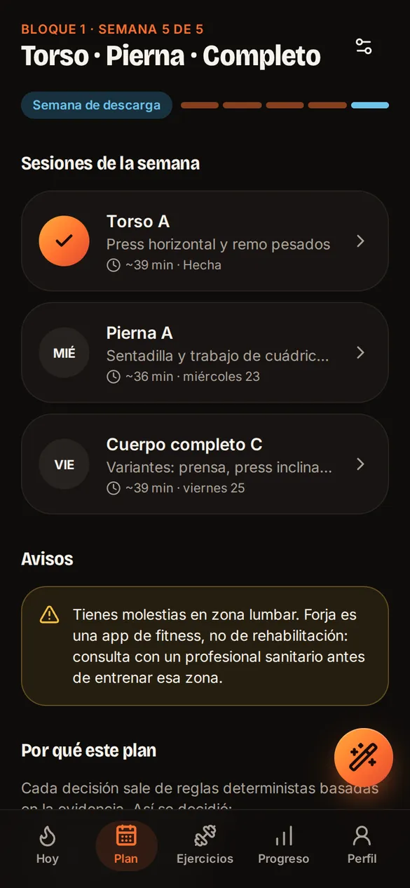
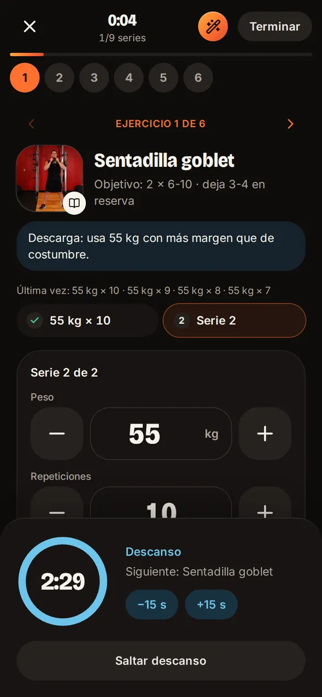
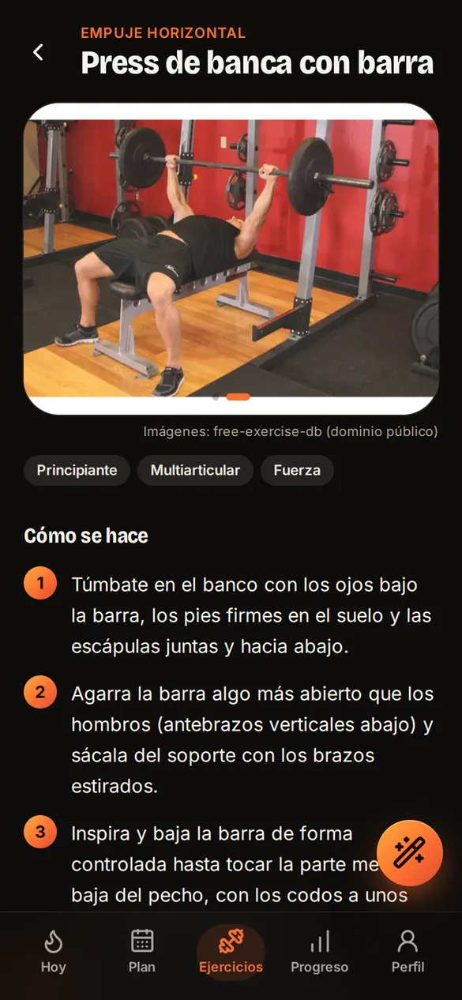

Un plan de fuerza que se explica: reglas, no magia
Forja crea un plan de entrenamiento de fuerza a medida y te acompaña en cada sesión. El reto: coste 0 €, funcionar sin conexión, tratar los datos de salud con el máximo cuidado y que cada decisión del plan tenga una razón que la persona pueda leer.
La decisión de producto: la IA no decide el plan
Motor de reglas determinista
Con los mismos datos, el mismo plan. Cada ajuste (volumen, reparto de días, series, descansos, progresión) sale de reglas escritas y probadas, y va acompañado de su motivo en pantalla. Implementado
Un modelo de lenguaje que decide
Descartado: podría inventar cargas, ignorar una lesión o cambiar de criterio entre dos preguntas. La IA llegó después (fase 3), pero solo para explicar. Descartado
Qué tiene en cuenta el motor
| Dato | Cómo influye en el plan |
|---|---|
| Objetivo y nivel | Rangos de repeticiones, esfuerzo (repeticiones en reserva) y volumen semanal por músculo |
| Días y tiempo por sesión | Reparto (cuerpo completo, torso/pierna, empuje/tirón/pierna) y cuántos ejercicios caben de verdad en el tiempo disponible |
| Material | Solo ejercicios que se pueden hacer con lo que hay, con alternativas equivalentes para sustituir en la sesión |
| Molestias y lesiones | Evita los ejercicios que cargan esa zona y avisa de consultar a un profesional; es una app de fitness, no de rehabilitación |
| Edad y tipo de trabajo | Ajustes de volumen y recuperación; cardio según las recomendaciones de la OMS |
| Historial y check-in semanal | Doble progresión, 1RM estimado, mesociclos con semana de descarga y adaptación según cómo llegas cada semana |
Semana de calibración: la primera semana no sugiere pesos. Pide elegir cargas con margen y, con lo que se registra, calcula las siguientes.
De la teoría a la sesión



- Onboarding en 10 pasos con consentimiento explícito para los datos de salud y avisos claros.
- Sesión que no se pierde: si se recarga la página o se cierra la app, se recupera donde estaba; la pantalla no se apaga (Wake Lock).
- Progreso y motivación: 1RM estimado, volumen semanal, medidas, historial, rachas y 22 logros en 4 rangos.
Privacidad desde el diseño
Local primero
Todo se guarda en el dispositivo (IndexedDB). No hace falta cuenta para usar la app completa.
Control total
Exportar, importar y borrar todos los datos en un clic, desde el perfil.
Sin sorpresas
Privacidad, términos, aviso de salud y licencias redactados y accesibles desde la app.